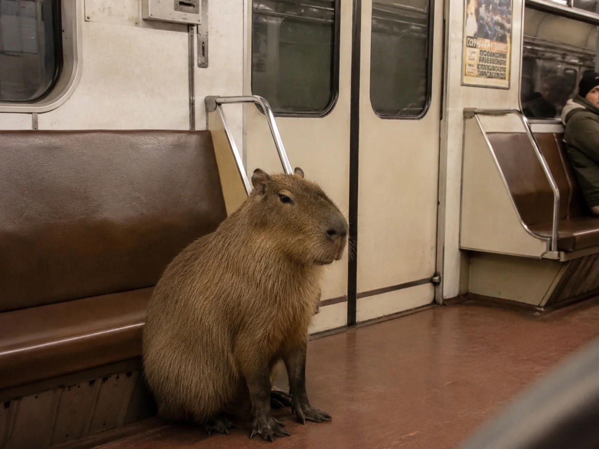

AR: карта оживает в метро
Три QR-кода — три разных существа. Сканируешь карту с капибарой — она бегает по перрону. Сканируешь выдру — ныряет в воду вокруг тебя. Сканируешь морского льва — плавает в воздухе. Технология дополненной реальности превращает транспортную карту в окно в другой мир — прямо в московском метро.